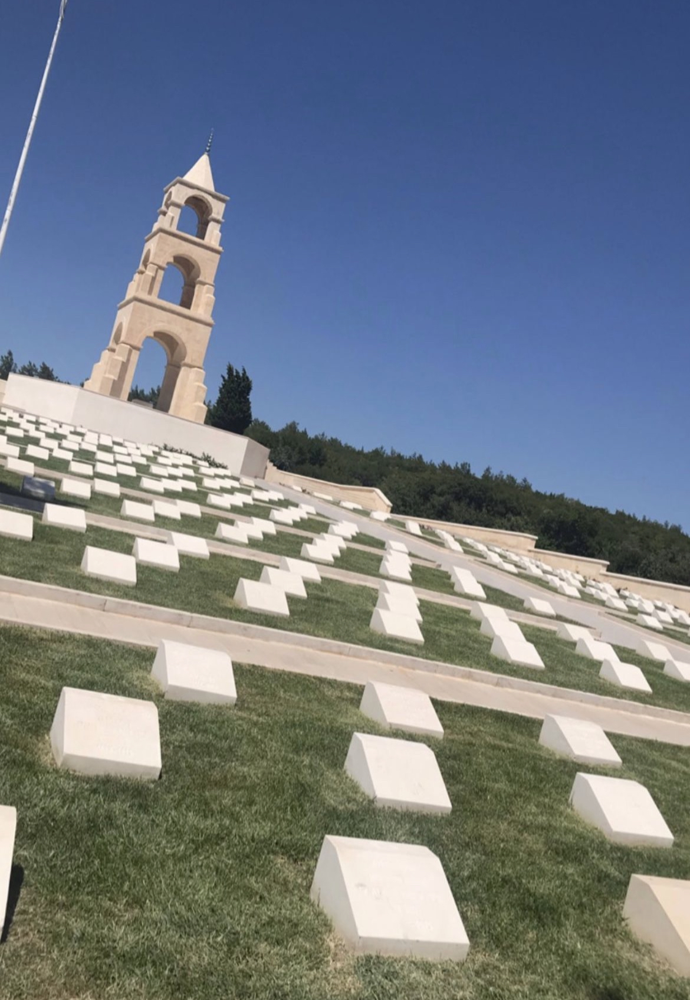

Throughout my life, both my family and my teachers were very sensitive about Canakkale and its history.
I didn't have the opportunity to go to Canakkale until i was in high school, but thanks to the trip my high school made on the anniversary of the Canakkale victory,
a box was filled in my list of places i needed to go. We explored every inch of the martyrs' cemetery with an experienced guide.
I still remember the goosebumps i got in some places. In this region, where there are martyrs' graves everywhere, you may feel the breath of thousands of honorable soldiers lying without shrouds.